§ 7.02 Liegeverbot
Rheinschiffahrtspolizeiverordnung
1. | Fahrzeuge und Schwimmkörper sowie schwimmende Anlagen dürfen nicht stilliegen | ||
a) | auf den Abschnitten der Wasserstraße, für die ein allgemeines Stilliegeverbot besteht; | ||
b) | auf den von der zuständigen Behörde bekanntgegebenen Strecken; | ||
c) | auf den durch das Tafelzeichen A.5 (Anlage 7) gekennzeichneten Strecken, auf der Seite der Wasserstraße, auf der das Tafelzeichen steht; | 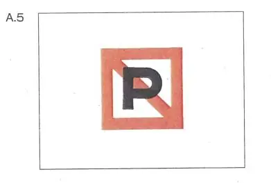 | |
d) | unter Brücken und Hochspannungsleitungen; | ||
e) | in Fahrwasserengen im Sinne des § 6.07 und in ihrer Nähe sowie auf Strecken, die durch das Stilliegen zu Fahrwasserengen werden würden, und in der Nähe solcher Strecken; | ||
f) | an den Einfahrten in und den Ausfahrten aus Häfen und Nebenwasserstraßen; | ||
g) | in der Fahrlinie von Fähren; | ||
h) | im Kurs, den Fahrzeuge beim Anlegen an Landebrücken und beim Abfahren benutzen; | ||
i) | auf Wendestellen, die durch das Tafelzeichen E.8 (Anlage 7) gekennzeichnet sind; | 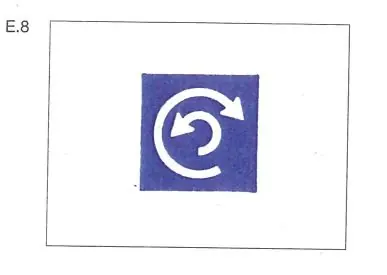 | |
k) | seitlich neben einem Fahrzeug, das das Tafelzeichen nach § 3.33 führt, innerhalb des Abstandes, der auf der dreieckigen weißen Zusatztafel in Metern angegeben ist; | 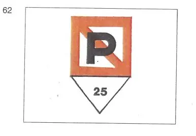 | |
l) | auf den durch das Tafelzeichen A.5.1 (Anlage 7) gekennzeichneten Wasserflächen, deren Breite auf dem Tafelzeichen in Metern angegeben ist. Die Breite bemißt sich vom Aufstellungsort des Tafelzeichens. | 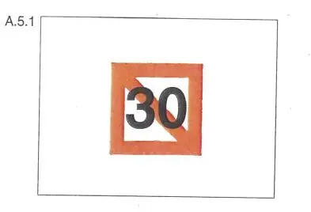 | |
2. | Auf den Abschnitten, auf denen das Stilliegen nach Nummer 1 Buchstabe a bis d verboten ist, dürfen Fahrzeuge und Schwimmkörper sowie schwimmende Anlagen nur auf den Liegestellen stilliegen, die durch eines der Tafelzeichen E.5 bis E.7 (Anlage 7) gekennzeichnet sind. Dabei sind die §§ 7.03, 7.04, 7.05 und 7.06 zu beachten. | ||
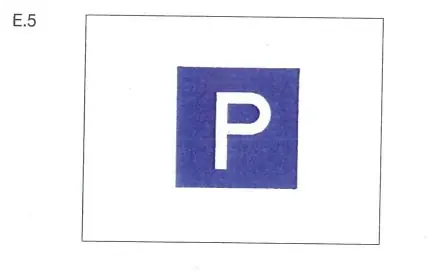 | 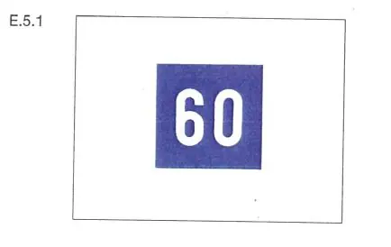 | ||
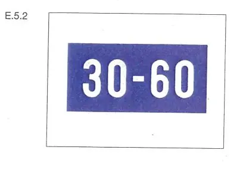 | 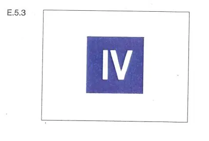 | ||
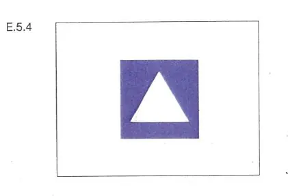 | 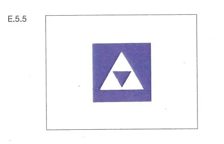 | ||
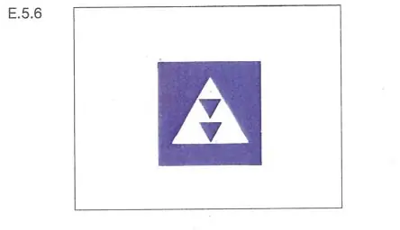 | 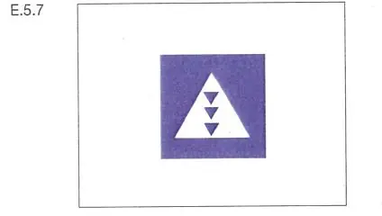 | ||
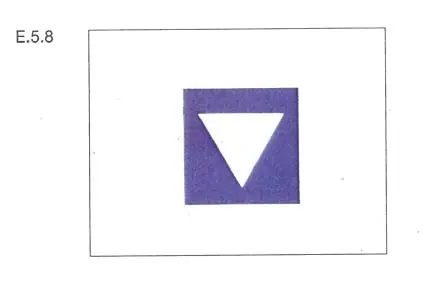 | 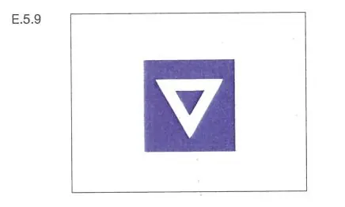 | ||
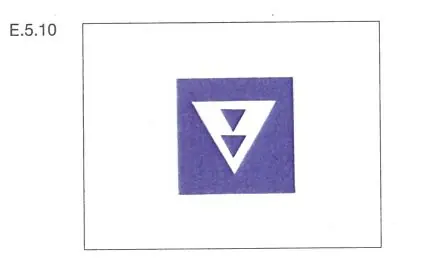 | 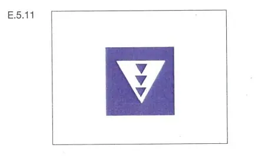 | ||
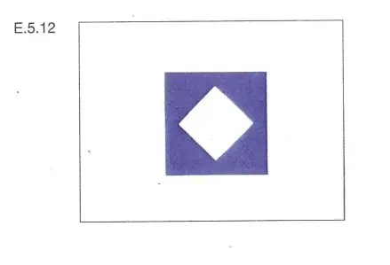 | 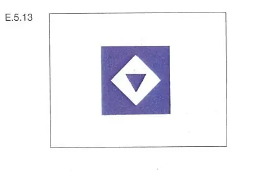 | ||
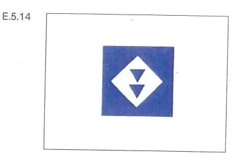 | 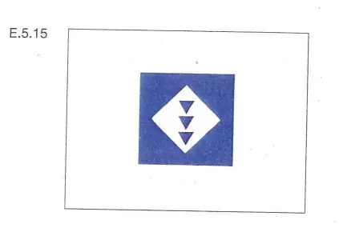 | ||
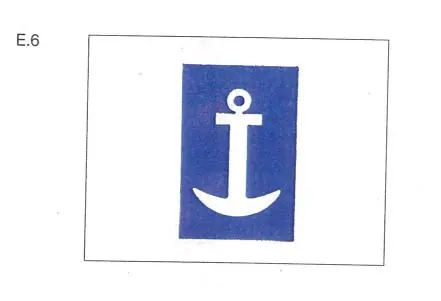 | 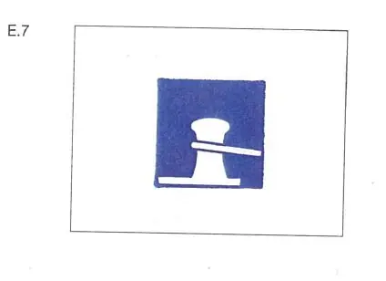 |